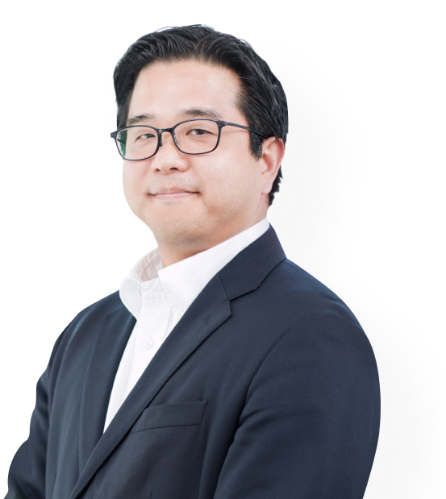
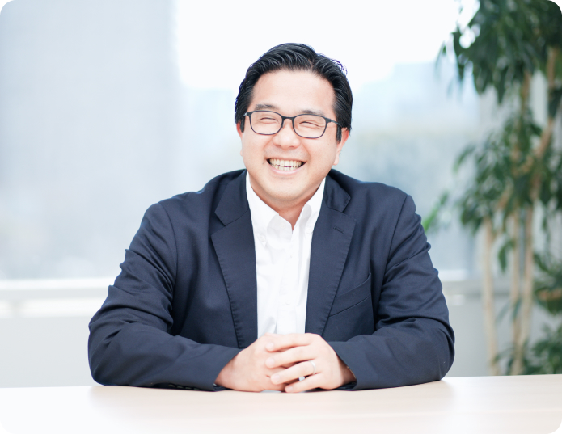
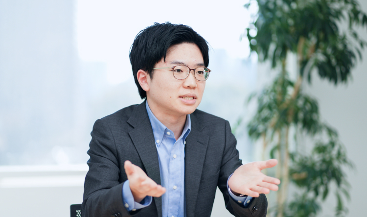
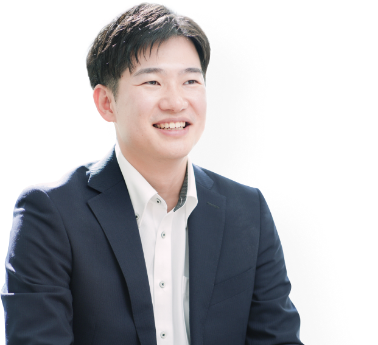
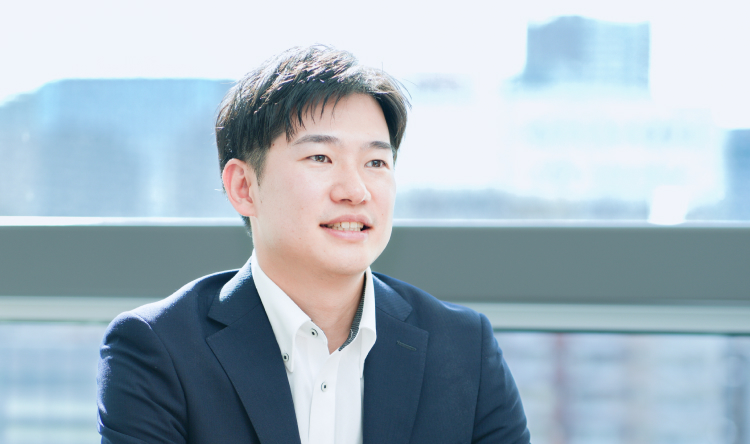

社員紹介
People
サムスンＣ＆Ｔジャパンで勤務する職員から聞くことができる上司業務紹介、
エピソードと彼らの生活についての話を紹介します。
化学‧素材チーム 化学グループ
古川 尚
Furukawa Takashi

総合商社として地域に限らず様々な
提案ができることを日本においても
認められるよう会社と共に
成長していきたいと考えております。
総合商社として地域に限らず様々な提案が
できることを日本においても認められるよう
会社と共に成長していきたいと考えております。
Work
- 部署やチーム内にて担当されているのはどのような仕事ですか？
- 化学グループ長として、部署の戦略樹立、
部署員の育成、実績管理などの業務を担当しております。
また、今後の成長動力となる新規案件の開発にも携わっています。

- 志望動機は何でしたか？また、入社を決めたポイントは何ですか？
- 学生時代に姉妹校との交流をきっかけとして韓国に興味を持っていたため、
日韓の架け橋になりたいと考え志望しました。
当時、インタビューに応じて下さった先輩方の対応がとても丁寧で
人を大切にする会社だと感じたことが、
入社を決めたポイントだったかと思います。
- 仕事をする上で、最も大切にしているものは何ですか？
-
情報共有です。一人でできる仕事は限られており、社内外関係者全員が同じ情報、
状況を認識することが早期の意思決定につながると考えております。
特に悪いニュースは伝えづらいものですが、早めに伝えることで
ベターな解決策を探せるのではないかと思います。
- これまでで一番、成功を感じた仕事のエピソードをお聞かせください。
- ある市場において中長期的な需要の拡大を予想し、
お取引様と共に何度も現地を訪問しながら、
市場調査や販売活動を続けてきた取引が、実際に大きく成長していく様子は、
やりがいと共に達成感が感じることができました。
Life
- 仕事後や休日はどのように過ごしていますか？
- 通勤時間が長く平日は家にいる時間が短いため、
週末は子供たちと公園に行ったり、
ご飯を食べに行ったりと、
基本的に家族と一緒に過ごすようにしています。
- 仕事以外での趣味や特技、情熱を注いでいることはありますか？
- 趣味はゴルフです。以前、先輩にクラブを頂いたのをきっかけに始めました。
なかなかうまくなりませんが、
ビジネスシーンにも活かすことのできる良い趣味になったのではないかと思います。
- 仕事とプライベートはしっかりと分けられていますか？
- 休日に仕事の連絡が来ることはほとんどありません。
また、家庭の都合に合わせて休暇も比較的自由に
取得できているため、しっかり区分されていると思います。
Schedule
-
7:30～8:30出勤 情報誌に目を通して、
メールを確認
-
8:30～9:30社内会議にて、部署間の情報共有
-
9:30～10:30部署会議、韓国本社とのオンライン会議
-
10:30～11:30お取引先様への連絡
-
11:30～12:30昼食
-
12:30～13:30外出/移動
-
13:30～15:30お取引先様との打ち合わせ
-
15:30～16:30移動/帰社
-
16:30～17:30本日の打ち合わせの情報整理
-
17:30～18:30今後の出張日程の調整し、
本日のメール確認
-
18:30～19:30退勤
社員が働きやすい環境を構築し、
社員一人一人と向き合えるような
思いやりのある人事を目指したいです。
Work
- 部署やチーム内にて担当されているのはどのような仕事ですか？
- 支援グループの幹部として、人事及び社長秘書業務を担当しております。
- どのようなところに仕事のやりがいを感じていますか。
- さまざまな場面で「人」と深く関われることこそが、
人事における最大のやりがい·魅力だと思います。
優秀な人材の確保、キャリア形成やモチベーションに関わる人員配置や組織文化、
人事考課などのと会社の組織づくりに貢献できるという点です。
- 仕事をする上で、最も大切にしているものは何ですか？
-
人との関係性だと思います。
社員の声を一つひとつ丁寧に拾い上げ、
会社全体を誰もが働きやすい環境へと
改善していくことを目的としているため、
人とのコミュニケーションがとても
大事だと思います。
会社全体を誰もが働きやすい環境へと
改善していくことを目的としているため、
人とのコミュニケーションがとても大事だと思います。
- これまでで、一番苦労した仕事のエピソードをお聞かせください。
- コロナ禍によって社員同士の対面でのコミュニケーションが
減少し交流がなくなってしまった時期には社員が孤立しないようにオンラインで
交流会を企画していましたが、やはりオンラインでは限界があり、社
内交流の促進について悩んでいました。
幸いコロナが終息となり2023年ごろから
全社イベントやボランティアが実施できるようになりました。
Life
- 仕事後や休日はどのように過ごしていますか？
- 退勤後は子供を保育園に迎えに行き,夕食の支度や子供の世話をしてます。
毎週末は朝食は外食と決めていて、
そのまま公園に遊びにいくのがルーティンとなっています。
平日子供と遊べない分,週末はできるだけことも
と過ごす時間を増やすように努力してます。
- 仕事以外での趣味や特技、情熱を注いでいることはありますか？
- 親子で一緒に遊べる遊びやおもちゃ作りなど、
子供と一緒にできる「楽しいこと」を常に探していています。
- 仕事とプライベートはしっかりと分けられていますか？
- 時差出勤制度を利用しているため、朝は７時、
退勤は１６時となっているので
１６時を境目にしっかりメリハリをつけてます。
Schedule
-
7:00～8:00出勤 人事の業務内容 整理、
スケジュールの確認
-
8:00～9:00秘書として社長のスケジュール確認
-
9:00～10:30韓国本社向けの報告資料や所得税の
申告などを作成
-
10:30～11:30人材採用関連企業と面談
-
11:30～12:30昼食
-
12:30～13:30給与計算、保険関連の業務
-
13:30～14:30社内会議
-
14:30～15:30採用面接
-
15:30～16:001日の業務を整理して、退勤
化学·素材チーム 素材グループ 半導体パート
宮﨑 爽介
Sosuke Miyazaki
営業担当として、この品目といえば
私であると思っていただけるように、
専門性を身につけて
成長していきたいと考えます。
営業担当として、この品目といえば
私であると思っていただけるように、
専門性を身につけて成長していきたいと考えます。
Work
- 部署やチーム内にて担当されているのはどのような仕事ですか？
- 中古の半導体製造装置売買を担当しています。日本には数多くの半導体工場がありますが、
そのような工場で使用を終えた半導体製造用の中古装置を入札等の形式で購入し、
国内外のお客様に販売する他、当社で紹介可能な在庫や
海外で売却された中古装置を日本のお客様向けに紹介、販売も行っております。
- どのようなところに仕事のやりがいを感じていますか。
- 当社が世界で広く保有するネットワークを活かし、
日本と世界をつなぐこと、人々の暮らしを支え、
より良くすることを実現できると思い、志望しました。
入社を決めたポイントは、前述の志望動機を実現できると考えたことに加え、
韓国に本社がある当社の場合、
私が大学時代に勉強していた韓国語も活かせる機会があるためです。

- 仕事をする上で、最も大切にしているものは何ですか？
-
相手の立場で考えることを心がけています。
お客様との協議の中で、条件が折り合わなかったり、
認識のずれが発生したりすることがありますが、そのような時にお客様の立場で、
懸念されている部分はどこか、
当社に期待することは何か等を
先回りして考えることで、
円滑に協議を進められるように
努めています。
当社に期待することは何か等を先回りして考えることで、
円滑に協議を進められるように努めています。
- お客様とのやり取りのなかで、
印象深いエピソードをお聞かせください。
- ある品目のサプライヤー様と食事をご一緒していた際に、
先方で取り組んでいる新しい品目の話を伺ったことがきっかけとなり、
新たな取引品目としてその後協議を進めることが出来たことがありました。
公式的なミーティングの場以外での、
コミュニケーションにもビジネスチャンスがあることを実感した機会でした。
Life
- 仕事後や休日はどのように過ごしていますか？
- テレビやNetflixで、
ドラマやバラエティー番組を見て、ゆっくり過ごすことが多いです。
- 仕事以外での趣味や特技、情熱を注いでいることはありますか？
- 学生時代にしていた野球を、
今でも休日に時々してリフレッシュするようにしています。
ポジションは、セカンドが専門です。
- 仕事とプライベートはしっかりと分けられていますか？
- 境界が曖昧だと仕事にもプライベートにも
良くないと思っているので、メリハリをつけるよう心がけています。
Schedule
-
8:30～9:30出勤 メールを確認 (同じく中古半導体装置売買事業を
行っている米国法人からのメール中心)
-
9:30～10:30社内会議にて、当日の業務の進め方や懸案事項を整理
-
10:30～11:30お取引先様への連絡
-
11:30～12:30昼食
-
12:30～13:30外出/移動
-
13:30～15:30お取引先様との打ち合わせ
-
15:30～16:30移動/帰社
-
16:30～17:30韓国本社とのオンライン会議にて、業務進捗の共有
-
17:30～18:30本日の打ち合わせの情報整理
-
18:30～19:30退勤
鉄鋼·エナジーチーム エナジーグループ
李正樹
Jongsu Lee

伸びる産業に関連した事業を当社が
先頭に立って進め、さらには社会に
貢献していけるように
していきたいと考えます。
伸びる産業に関連した事業を当社が
先頭に立って進め、さらには社会に
貢献していけるようにしていきたいと考えます。
Work
- 部署やチーム内にて担当されているのはどのような仕事ですか？
- ミッションは主に2つで、①バイオマス燃料の拡販と②日本と韓国の架け橋になることです。
①バイオマス燃料を日本の発電所へ拡販して売上, シェアを伸ばすこと
②バイオマス燃料に関する日本の動向やエネルギー関連企業との協業を模索し
韓国本社を巻き込んでプロジェクトを進める事
- 仕事をする上で、最も大切にしているものは何ですか？
- 自分の意見を持って、理由をきちんと説明することです。
基本的なところですが、自分の意見をしっかりと
説明できるように準備することは大切かと思います。
外部の方と会う時はサムスングループを代表している気持ちで
責任を果たそうと努力しています。

- これまでで一番、成功を感じた仕事のエピソードをお聞かせください。
-
部署として3年にわたり取引の協議をしていたお客様か
ら初めて受注した時が一番嬉しい記憶として残っております。
普段から顧客と密に会話することでビジネスチャンスが出てくるかもしれない、
そんな考えを常に持つことの大切さを学びました。
- この会社でどのように成長していきたいですか？
- 今後は、新規事業開発に取り組みたいです。当社はサムスン物産の日本法人ということで、
日本を軸に事業を創出していくことが大きな使命だと思います。
バイオマスに限らず、
今後伸びる産業に関連した事業を
当社が先頭に立って進め、さらには社会に
貢献していけるように
していきたいと考えます。
今後伸びる産業に関連した事業を当社が先頭に立って進め、
さらには社会に貢献していけるようにしていきたいと考えます
Life
- 仕事後や休日はどのように過ごしていますか？
- サッカーやスポーツジムに行って身体を動かした後、
友達と食事をしに出かけたりしています。
- 仕事以外での趣味や特技、情熱を注いでいることはありますか？
- 運動が好きなので、休日はランニング、サッカー、ゴルフをしています。
毎年12月は大学時代の友人と那覇マラソンに参加して
42.195kmを2年連続走り切りました!!
那覇マラソンを感想できなくなったら、おじさんの仲間入りと思っています(笑)。
- 仕事とプライベートはしっかりと分けられていますか？
- 当社は、オン/オフをしっかり分けられる方が多いです。
休みは取りやすい雰囲気なので、
計画をもって旅行などに行くことができます。
Schedule
-
8:30～9:30出勤 メールを確認
-
9:30～10:30お取引様へのプレゼンテーション資料作成
-
10:30～11:30部署会議、韓国本社とのオンライン会議
-
11:30～12:30昼食
-
12:30～13:30外出/移動
-
13:30～15:30お取引先様との打ち合わせ
-
15:30～16:30韓国本社とのオンライン会議にて、業務進捗の共有
-
16:30～17:30本日の打ち合わせの情報整理
-
17:30～18:30ビジネスモデルの提案書を作成
-
18:30～19:30退勤
 洪 智賢
洪 智賢